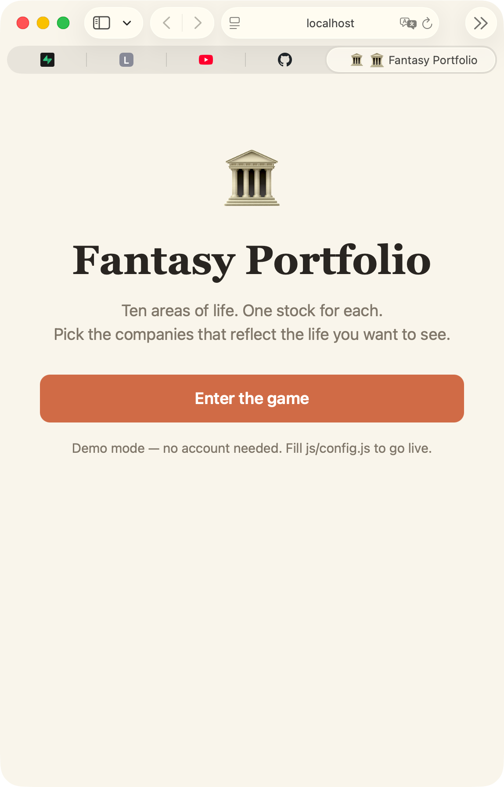
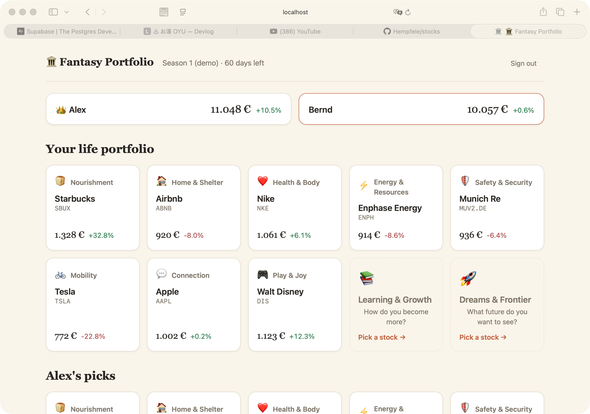

2026-06-13
From a voice note to a playable scaffold
The game started as a six-minute voice memo recorded on the Desktop. A new reusable
/transcribe skill (local whisper, afconvert → 16 kHz WAV) turned it into a
transcript; from there came PLAN.md, two explicit architecture decisions, and by the
end of the session a fully playable game in demo mode: sign in, name yourself, pick stocks
for ten life areas via typeahead search, lock them in, and watch the dashboard compare
players — crown included.


Supabase is fully prepared but not yet live: 001_init.sql (schema + RLS) and three
edge functions (stock-search, make-pick, refresh-prices) sit in the repo,
with the go-live checklist in README.md.
Decided for
- GitHub Pages + Supabase over Pi hosting (remote player 2 needs a real URL).
- Magic-link email over player codes and Google OAuth.
- Ratio scoring (€1,000 × current/locked) — FX problem dissolved.
- Demo locks at season-start prices so a fresh board moves immediately.
?seed/?resetURL params as the demo test bench.
Decided against
- Client-side price locking — too forgeable, even among friends.
- Any chart library or framework — the whole game is vanilla modules.
- Building notifications now — channel (email vs Telegram) decided once the game is live.